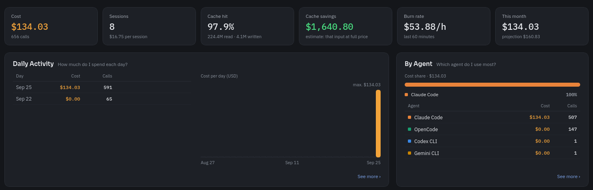
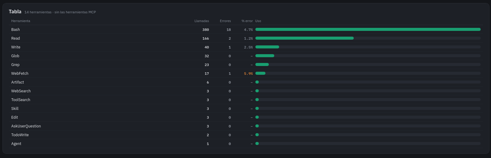

AgentBoard
El panel de coste y actividad de tus agentes de código, en local.
Reúne en una sola vista qué hacen Claude Code, Codex, Copilot, Cursor, Gemini y OpenCode —y cuánto cuestan— leyendo los logs que ya tienen en el ordenador. Nada sale de la máquina.
Qué es
Los agentes de código generan mucha actividad —llamadas al modelo, tokens, sesiones, herramientas, comandos— y un gasto repartido y opaco en cada herramienta. No hay un sitio que responda de un vistazo cuánto llevo gastado este mes, qué modelo me sale más caro o en qué se me va el tiempo del agente. AgentBoard es una app de escritorio que lee esos registros, los cruza y los presenta en un panel.
Local y privado
Sin proxy, sin claves de API, sin telemetría. Ningún dato sale del equipo.
Solo lectura
Lee los logs que ya existen; no toca ni interfiere con el trabajo de los agentes.
Caché reconstruible
Guarda solo cifras de uso para arrancar al instante. Se puede borrar o desactivar con «Solo memoria».
En vivo y rápido
Lo que escribe un agente aparece en menos de medio segundo. 0 % de CPU en reposo.
Multiplataforma
Linux, Windows y macOS con un único binario nativo y ligero.
Para otros agentes
Un servidor MCP permite que un agente consulte estos datos en mitad de una conversación.
Para qué sirve
- Controlar el gasto: coste del día y del mes, proyección a fin de mes y aviso al acercarse al presupuesto.
- Entender el uso: qué agente y qué modelo se usan más, y con qué eficiencia de caché.
- Ver en qué se trabaja: reparto por actividad (coding, testing, debugging…), por proyecto y por rama de git.
- Detectar fricción: qué herramientas, comandos y servidores MCP fallan más.
- Consultarlo desde otro agente con el servidor MCP incluido.
Instalación
Descarga el instalador de tu sistema desde la última versión publicada. Todos incluyen la app y el servidor MCP.
| Archivo | Qué es |
|---|---|
AgentBoard-App_<versión>_linux_… | La app para Linux (.AppImage, .deb, .rpm), con el MCP dentro. |
AgentBoard-App_<versión>_windows_… | La app para Windows (.msi o instalador -setup.exe). |
AgentBoard-App_<versión>_darwin_… | La app para macOS (.dmg universal). |
AgentBoard-MCP_<versión>_<sistema> | Solo el servidor MCP, para registrarlo en un agente sin instalar la app. |
Linux
- .deb / .rpm: se instalan con el gestor de paquetes (
sudo apt install ./archivo.deb,sudo dnf install ./archivo.rpm). La app queda en el menú y el MCP en/usr/bin/agentboard-mcp. - AppImage: no necesita instalación. Dale permiso de ejecución y ábrelo:
Ideal en distribuciones inmutables (Bazzite, Silverblue…). Si tu sistema no tiene FUSE, ejecútalo conchmod +x AgentBoard-App_*_linux_*.AppImage ./AgentBoard-App_*_linux_*.AppImageAPPIMAGE_EXTRACT_AND_RUN=1o extráelo con--appimage-extracty lanzasquashfs-root/AppRun. - Requiere WebKitGTK 4.1, presente en cualquier escritorio moderno.
Windows y macOS
Actualizar o desinstalar
Para actualizar, instala la versión nueva encima (o sustituye el AppImage). Para desinstalar, quita la app con el gestor de tu sistema; si quieres no dejar rastro, borra también la carpeta de ajustes y la de la caché (ver Ajustes y datos).
Primeros pasos
- Abre AgentBoard. Detecta solo los agentes instalados y lee sus logs. La primera vez lee todo el historial y crea la caché; las siguientes solo lee lo nuevo, así que arranca al instante.
- Elige el periodo en la barra superior (hoy, 7, 30, 60 o 90 días, o todo) y, si quieres, filtra agentes o proyectos.
- Mira el Resumen: coste, sesiones, cache hit, ahorro por caché, burn rate y gasto del mes, con la variación frente al periodo anterior.
- Entra en un apartado desde el panel lateral (o con
Ctrl+K) para ver su tabla, su gráfico y la vista ampliada. - Configura precios y presupuestos para recibir avisos al 80 % y al 100 %.
- Déjala en la bandeja: al cerrar la ventana sigue funcionando y mantiene los datos al día. Para cerrarla del todo, «Salir» en el menú de la bandeja.
Agentes compatibles
Un agente aparece si está instalado (ejecutable en el PATH o su carpeta de configuración), aunque aún no tenga sesiones. Sus datos salen en cuanto existan.
| Agente | Dónde lee | Variable para cambiar la ruta |
|---|---|---|
| Claude Code | ~/.claude/projects/**/*.jsonl | $CLAUDE_CONFIG_DIR |
| Codex CLI | ~/.codex/sessions/**/rollout-*.jsonl | $CODEX_HOME |
| GitHub Copilot CLI | ~/.copilot/session-state/*/events.jsonl | $COPILOT_HOME |
| Cursor CLI | ~/.cursor/projects/*/agent-transcripts/*/*.jsonl | — |
| Gemini CLI | ~/.gemini/tmp/*/chats/session-*.jsonl | $GEMINI_CLI_HOME |
| OpenCode | su base SQLite (opencode.db), lectura incremental | — |
Los nombres de herramientas y modelos de cada agente se normalizan para poder compararlos entre sí. Los subagentes (por ejemplo, las tareas que Claude Code delega) se atribuyen a su sesión y también se ven por separado en Agent Types.
El panel y sus apartados
Un panel lateral agrupa los apartados en Coste, Trabajo, Herramientas y Configuración. Cada apartado tiene su tabla y su gráfico, y una vista ampliada al pulsarlo. El panel se puede plegar a solo iconos.

| Apartado | Qué responde |
|---|---|
| 📊 Resumen | KPIs con su variación, gasto diario por agente con la línea del periodo anterior, «Hoy en directo» y top de proyectos, modelos y actividades. |
| 📅 Daily Activity | Cuánto se gasta cada día. |
| 🤖 By Agent | Qué agente se usa más y cuánto cuesta cada uno. |
| 📁 By Project | Coste por proyecto (y por rama al elegir uno), con el overhead de contexto. |
| 🧾 Proyectos | Una fila por proyecto (agrupando worktrees) con su detalle y sus sesiones. Ver Proyectos y sesiones. |
| 🧭 By Activity | Reparto por tipo de actividad: coding, exploration, testing, delegation, conversation, build/deploy, feature-dev, debugging, brainstorming, general. |
| 🧠 By Model | Coste, cache hit y llamadas por modelo. |
| 🔧 Tools | Uso y porcentaje de error por herramienta nativa. |
| ⌨️ Shell Commands | Comandos de shell más ejecutados y sus errores. |
| ✨ Skills & Agents | Skills y subagentes invocados. |
| 🔌 MCP Servers | Servidores MCP usados y su actividad. |
| 🧬 Agent Types | Subagentes de todos los agentes, por agente y tipo, con su coste. |
| 🏷️ Precios y presupuestos | Precios por modelo editables y presupuestos. Ver Precios y presupuestos. |

Las tablas largas se pueden ordenar por cualquier columna; las de más de 200 filas solo dibujan lo visible para mantener la fluidez.
Filtros y comparar periodos
La barra superior aplica un filtro común a todos los apartados.
- Periodo: hoy, 7, 30, 60 o 90 días, o todo el historial.
- Agentes: mostrar u ocultar cada agente.
- Proyectos: uno o varios; también «sin proyecto» para sesiones fuera de un repositorio.
- Comparar con el periodo anterior: cada KPI muestra su variación y los gráficos dibujan la línea del periodo anterior.
Los cambios de filtro y de apartado responden en un fotograma (≈ 33 ms) cuando los datos ya se habían cargado: la app guarda en memoria lo último consultado y solo vuelve a pedir datos cuando cambian.
Proyectos y sesiones
El apartado Proyectos tiene una fila por proyecto (los worktrees de un mismo repo se agrupan) con agentes, ramas, modelo principal, sesiones, tiempo activo, turnos, compactaciones y coste, con búsqueda y vistas rápidas.
- Detalle de proyecto: coste acumulado por día, actividades, modelos, ramas, latencia de cada herramienta (p50/p95) y la lista de sesiones, paginada y ordenable.
- Detalle de sesión: coste acumulado con las compactaciones marcadas, turnos con su actividad y coste (cargados por páginas), modelos usados y latencia por herramienta.
Métricas y «Hoy en directo»
| Métrica | Qué significa |
|---|---|
| Coste | Tokens de cada llamada por el precio de su modelo (USD por millón de tokens). Si el agente informa su propio coste, se usa ese. |
| Cache hit | Proporción de tokens servidos desde caché sobre el total de entrada. |
| Ahorro por caché | Estimación de lo que habría costado ese contexto a precio completo. |
| Burn rate | Coste de los últimos 60 minutos, en USD/hora. |
| Proyección del mes | Gasto acumulado extrapolado a fin de mes, con aviso si supera el presupuesto. |
| Overhead de contexto | Tokens de la primera llamada de cada sesión: lo que cuesta arrancar con el contexto del proyecto. |
| 1-shot | Proporción de turnos con ediciones que salieron bien a la primera, sin reintentos. |
Hoy en directo
La portada muestra siempre lo de hoy, sea cual sea el periodo (respetando los filtros de agentes y proyectos): el gasto desde las 00:00 y su variación frente a ayer a la misma hora, el ritmo de la última hora, el gasto por hora y la sesión activa (o la última de hoy) con enlace a su detalle.
Precios y presupuestos
- Precios por modelo (entrada, salida, lectura y escritura de caché), editables. Cada precio indica su origen: por defecto, editado, coste del agente o «falta precio».
- Los modelos sin precio cuentan como 0 y aparecen avisados, para que no pasen desapercibidos.
- Los precios editados se guardan en los ajustes y recalculan todos los costes al momento, en la app y en el servidor MCP.
- Presupuestos: mensual, diario y por proyecto o por agente, cada uno con su barra de progreso.
- Avisos nativos al 80 % y al 100 % de cada presupuesto: los mensuales y por proyecto/agente sobre la proyección del mes, el diario sobre el gasto de hoy.
Funciones de escritorio
Bandeja del sistema
Gasto del mes en el tooltip, panel de «Hoy» y menú Mostrar / Salir. Al cerrar la ventana la app sigue en segundo plano.
Buscador Ctrl+K
Salta a cualquier apartado, deja solo un proyecto o abre una sesión reciente.
Exportar
Las llamadas del filtro activo a CSV o JSON, desde la barra superior o Ajustes.
Temas
Claro, oscuro o del sistema.
Idiomas
Español, inglés, portugués y francés, o el idioma del sistema.
Adaptable
La interfaz funciona desde 600 px de ancho y el panel lateral se pliega.
Ajustes y datos
Los ajustes (tema, idioma, precios, presupuestos, avisos) se guardan en settings.json dentro de la carpeta de configuración de AgentBoard
(~/.config/agentboard/ en Linux).
Ajustes → Datos
- Solo memoria (desactivado por defecto): deja de guardar la caché en disco y la borra. Cada vez que abras la app se vuelven a leer todos los logs.
- Reconstruir caché: borra los datos guardados y relee todos los logs. El botón queda deshabilitado hasta que termina y el panel se actualiza solo.
Ambas opciones se aplican sin reiniciar la app.
Dónde está la caché
| Sistema | Ruta |
|---|---|
| Linux | ~/.local/share/agentboard/cache.sqlite (o $XDG_DATA_HOME/agentboard/) |
| macOS | ~/Library/Application Support/agentboard/cache.sqlite |
| Windows | %APPDATA%\agentboard\cache.sqlite |
Junto a ella pueden aparecer cache.sqlite-wal y cache.sqlite-shm. Ocupa aproximadamente una quinta parte del tamaño de los logs
(unos 40 MB por cada 200 MB de logs). Si se daña o es de otra versión, la app la borra y la reconstruye sola. Con la app cerrada, también puedes borrar esos tres archivos a mano.
Privacidad
| Se guarda (en la caché) | No se guarda nunca |
|---|---|
|
|
- Sin telemetría ni conexiones externas: nada sale del ordenador.
- En Linux y macOS la carpeta de la caché es
0700y sus archivos0600: solo tu usuario puede leerlos. - Con Solo memoria no se escribe nada en disco salvo los ajustes.
- AgentBoard solo lee las carpetas de logs de los agentes; no explora el resto del disco.
Actualización en vivo
No hay sondeo periódico: AgentBoard se entera de los cambios porque el sistema operativo le avisa cuando un log cambia.
- Vigilante. Un único vigilante por carpeta de agente (inotify, FSEvents o ReadDirectoryChangesW según el sistema) avisa de cada archivo modificado.
- Agrupa ráfagas. Espera 150 ms sin cambios en ese archivo para juntar escrituras seguidas; si un log no deja de crecer, lo relee igualmente una vez por segundo.
- Lee solo lo nuevo. Cada archivo se sigue desde el byte donde se quedó. Una línea a medio escribir se deja para la siguiente pasada. Si un log se trunca o se sustituye, se relee desde cero sin duplicar.
- Avisa a la interfaz como mucho una vez por segundo, y solo se refrescan las vistas que están en pantalla.
Arquitectura
Tauri 2: un núcleo en Rust hace la lectura y la agregación, y una interfaz en React + TypeScript la presenta. Un único binario nativo por sistema.
data:changed (≤ 1 por segundo, sin datos dentro)Piezas
| Pieza | Qué hace |
|---|---|
| Providers | Un módulo por agente: detecta si está instalado, sabe dónde están sus logs y convierte cada registro a tipos comunes (sesiones, llamadas, turnos, usos de herramienta). Mira el tipo de cada línea antes de parsearla entera y nunca copia el texto de los mensajes. |
| Ingesta | Lectura incremental por offsets. Cada llamada se identifica por su message_id, así que releer nunca duplica. Un archivo corrupto solo afecta a ese archivo. |
| Base de datos | SQLite con el coste y el día local precalculados al guardar y agregados diarios por sesión y modelo; los periodos de días completos se responden desde ahí. |
| Caché de resultados | Las consultas repetidas con los mismos datos se sirven al instante; se invalida en cuanto entran datos nuevos. |
| Caché fiel a los logs | Si un log desaparece, se sustituye o encoge, sus datos se retiran: la caché dice lo mismo que leer los logs presentes desde cero. |
| Precios | Precio por modelo para calcular coste y ahorro por caché. |
| Servidor MCP | Binario aparte que reutiliza providers, ingesta y consultas. |
| Capa | Tecnología |
|---|---|
| Escritorio | Tauri 2 (usa el WebView del sistema) |
| Núcleo | Rust · rusqlite · notify · tracing |
| Interfaz | React 19 · TypeScript · Vite · gráficos dibujados a medida |
| Integración | Model Context Protocol (stdio, JSON-RPC 2.0) |
| Especificación | OpenSpec: cada cambio se describe antes de implementarse |
Rendimiento
Medido con 200 MB de logs sintéticos (unas 430 000 llamadas) en un portátil de 12 núcleos. Detalle y comandos para reproducirlo en
docs/perf/RESULTS.md.
| Métrica | Antes | Ahora |
|---|---|---|
| Arranque con datos ya indexados | 1,8 s | ~130 ms |
| Primer escaneo (sin caché) | 15,5 s | 2,2 s |
| Escritura en un log → dato en pantalla | ~790 ms | ~460 ms |
| Resumen completo | 1 012 ms | ~103 ms (0 ms repetido) |
| Cambio de filtro o apartado ya cargado | 67–167 ms | 33 ms |
| Consulta más lenta con 1 GB de logs | ~1 s | ≤ 243 ms |
| CPU en reposo | sondeo cada 20 s | 0–10 ms por minuto |
Cada Pull Request ejecuta benchmarks en CI y falla si alguno empeora más de un 20 % respecto a la línea base.
Servidor MCP
agentboard-mcp expone los mismos datos a cualquier agente compatible con el Model Context Protocol (Claude Code, Codex, Gemini, Cursor, OpenCode…).
Un agente puede preguntar «¿cuánto llevo gastado este mes?» o «¿qué modelo me sale más caro?» durante una conversación.
- No necesita la app abierta: al arrancar escanea los logs a memoria y responde por stdio (JSON-RPC 2.0:
initialize,tools/list,tools/call). - No usa la caché de la app ni escribe nada en disco.
- Los argumentos inválidos devuelven un error legible sin cerrar la conexión.
Dónde está
| Instalación | Ruta del servidor |
|---|---|
| Linux (.deb / .rpm) | /usr/bin/agentboard-mcp |
| Linux (AppImage extraído) | <carpeta>/usr/bin/agentboard-mcp, o el binario suelto AgentBoard-MCP_… |
| Windows | C:\Program Files\AgentBoard\agentboard-mcp.exe |
| macOS | /Applications/AgentBoard.app/Contents/MacOS/agentboard-mcp |
Registrarlo en tu agente
# Claude Code
claude mcp add agentboard -- /usr/bin/agentboard-mcp
# Codex CLI (~/.codex/config.toml)
[mcp_servers.agentboard]
command = "/usr/bin/agentboard-mcp"
# Gemini CLI (~/.gemini/settings.json)
{ "mcpServers": { "agentboard": { "command": "/usr/bin/agentboard-mcp" } } }
# OpenCode (opencode.json)
{ "mcp": { "agentboard": { "type": "local", "command": ["/usr/bin/agentboard-mcp"] } } }Herramientas
Casi todas aceptan un filtro opcional: period (today, 7d, 30d, 60d, 90d, all),
agents (ids), projects (ids) y no_project (solo sesiones sin proyecto).
| Herramienta | Devuelve |
|---|---|
get_summary | Coste, llamadas, sesiones, cache hit, ahorro por caché, burn rate y modelos sin precio. |
get_cost_by_agent · _model · _project · _branch | Desglose de coste y uso por dimensión. |
get_daily · get_hourly | Series por día o por hora (coste, llamadas, sesiones, tokens). |
get_activity | Reparto por tipo de actividad. |
get_tools · get_shell_commands | Uso y errores por herramienta o comando. |
get_skills · get_mcp_servers · get_agent_types | Skills y subagentes, servidores MCP y tipos de subagente. |
get_projects · get_project_detail | Proyectos del periodo y el detalle de uno (serie diaria, actividades, modelos, ramas, sesiones, latencia p50/p95). |
get_sessions · get_session_detail | Sesiones del periodo (limit 1–500) y el detalle de una (coste acumulado, compactaciones, turnos, latencia). |
get_insights | Avisos del periodo, del más grave al menos. Ver Avisos. |
get_prices | Precio vigente por modelo y su origen. |
list_agents · list_projects | Agentes y proyectos detectados, con su coste. |
get_data_info | Rango de fechas y totales del historial. |
Avisos (insights)
La herramienta MCP get_insights analiza el periodo y devuelve avisos ordenados por gravedad (importante, aviso, información y lo que va bien).
| Aviso | Salta cuando |
|---|---|
| Compactaciones | Hay sesiones con 3 o más compactaciones de contexto. |
| Modelo caro en tareas sencillas | Un modelo de gama alta en exploración o conversación, con ahorro estimado > 1 USD usando uno más barato. |
| Herramienta / MCP / comando que falla | Herramienta ≥ 20 usos y > 10 % de error; servidor MCP ≥ 10 usos y > 10 %; comando ≥ 5 errores y ≥ 5 %. |
| Modelos sin precio | Algún modelo del periodo no tiene precio. |
| Cache hit bajo | Un modelo con ≥ 100 llamadas por debajo del 70 %. |
| 1-shot bajo / bueno | < 80 % o ≥ 95 %, con ≥ 20 turnos con ediciones. |
| Concentración | Un proyecto con ≥ 50 % del gasto, o un modelo con ≥ 70 %. |
| Sesión más cara | Supone ≥ 20 % del gasto o más de 5 USD. |
| Subagentes | Suman ≥ 20 % del gasto. |
| Ritmo alto | La última hora cuesta más del doble de la media por hora activa. |
| Fuera de horario | ≥ 30 % del gasto antes de las 9 o desde las 19 h. |
| Pico de gasto | Un día > 2× la media y > media + 2σ (con ≥ 5 días de actividad). |
| Tendencias | Caída del cache hit > 3 puntos o coste por sesión +30 % frente al periodo anterior. |
| Agentes sin uso | Instalados pero sin llamadas en el periodo. |
| Ahorro por caché | La caché ahorró más de lo que se gastó. |
Problemas frecuentes
La ventana se abre en blanco en Linux
Pasa con algunas librerías de display empaquetadas y Mesa moderno (Fedora, Bazzite, Arch). Los AppImage publicados ya vienen corregidos;
si compilas tú, usa scripts/fix-appimage.sh. Como alternativa, prueba el .rpm o el .deb.
Un agente no aparece
Comprueba que está instalado y que sus logs están en la ruta de la tabla de Agentes compatibles, o en la de su variable de entorno. Si su carpeta aparece después de abrir la app, el vigilante la detecta sola.
Las cifras no cuadran o veo datos raros
Ajustes → Datos → Reconstruir caché. Relee todos los logs desde cero. Revisa también que el modelo tenga precio en Precios y presupuestos.
Aparecen errores «database is locked»
Suele deberse a tener dos instancias de AgentBoard abiertas a la vez con la misma caché. Cierra una (también desde la bandeja).
Quiero que no se guarde nada en disco
Activa Solo memoria en Ajustes → Datos. Se borra la caché y la app vuelve a leer los logs cada vez que se abre.
Windows o macOS no me dejan abrirla
Los binarios van sin firmar. En Windows: SmartScreen → «Más información» → «Ejecutar de todas formas». En macOS: clic derecho → «Abrir».
¿Cómo veo qué está haciendo por dentro?
Arranca la app desde una terminal con AGENTBOARD_LOG=debug: muestra el escaneo, cada archivo, las consultas y su duración.
He vuelto a una versión anterior y la caché sigue ahí
Las versiones sin caché la ignoran. Puedes borrar a mano cache.sqlite, -wal y -shm de la carpeta de datos.
Desarrollo
Requisitos: Node.js 20+, Rust estable y, en Linux, WebKitGTK 4.1.
npm ci
npm run tauri dev # app con recarga en caliente
npm test # tests del frontend (vitest)
cargo test --manifest-path src-tauri/Cargo.toml --workspace
cargo build --manifest-path src-tauri/Cargo.toml -p agentboard-mcpCómo perfilar
AGENTBOARD_LOG=debug npm run tauri dev # trazas con duración
python3 scripts/gen-fixtures.py 200m # logs sintéticos (50m / 200m / 1g)
cd src-tauri && cargo build --profile bench-fast --example perf_scan
./target/bench-fast/examples/perf_scan --fixtures target/perf-fixtures/200m --phase queries
cargo bench --manifest-path src-tauri/Cargo.toml # benchmarks criterion
node scripts/perf-ui.mjs --latency=104 --runs=3 # tiempos de la interfazCómo contribuir
- Cada cambio se describe primero con OpenSpec en
openspec/. - Commits en español con Conventional Commits, uno por cambio lógico.
- Cada Pull Request compila y prueba en Linux, Windows y macOS, y compara los benchmarks.
- Para añadir un agente: un módulo en
src-tauri/src/providers/que implemente el traitProvider, registrarlo enproviders::all()y añadir un fixture anonimizado con su test. - Traducciones en
src/lib/i18n.ts, con el español como clave.
Guía completa en CONTRIBUTING.md y en la
wiki.
Licencia
AgentBoard es software de código abierto bajo licencia MIT © Renzo Ramos.